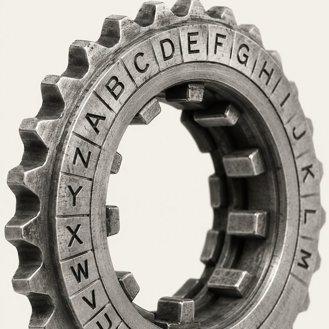
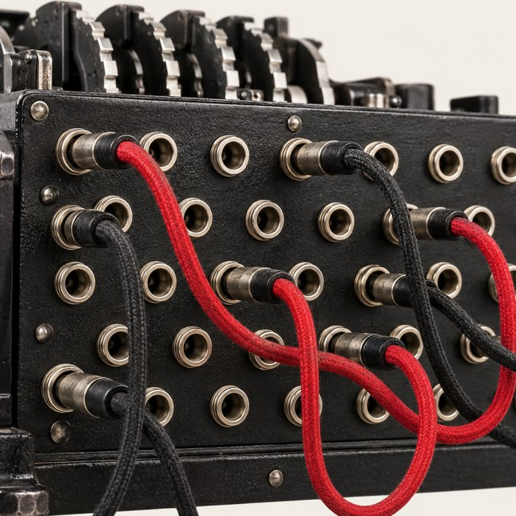
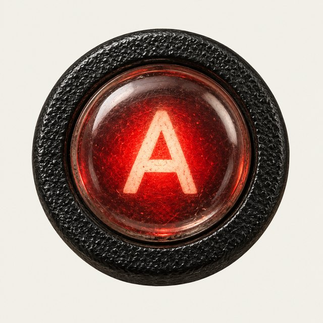

AI evaluation / typos / robustness
GarbleBench
How well do AI models understand questions with typos?
24 plain questions, each corrupted at 12 rates from clean to fully mangled: neighbouring-key typos, dropped letters, stray characters, swapped pairs, lost punctuation. Every prompt goes to a fresh agent session with nothing else in it. Idea by Matthew Miskiewicz.
meaning
different
surface
Standings
Who reads through the noise
Tolerance is the area under the accuracy curve from 0 to 100% corruption. Breaks at is the corruption rate where accuracy first falls below half. The phase strip shows what each run did at every rate, clean on the left.
Breakpoints
Where reading gives out
Share of the 24 questions answered correctly at each corruption rate. Ticks on the dashed line mark each model's breaking point.
Phases
Answer, ask, or give up
Matthew's guess: first the model just answers, then it starts asking "did you mean…?", then it stops recognising anything. Here is what each model did as the text fell apart.
Reasoning effort
Does thinking harder help?
Tolerance at each reasoning effort. A flat line means the extra thinking bought nothing.
Proofs
Read what they said back
Pick a question, turn the rotor, and read every reply. Red marks the characters that are not in the original.
Method
How it was set up
Each question has one short, fixed answer: capitals, authors, dates, small sums. Every character gets one random draw. At rate r, a character whose draw is under r is corrupted: a neighbouring key (36%), dropped (26%), a stray character added after it (22%) or swapped with the next one (16%). Punctuation and capitals go faster, at 2.5r and 2r.
Corruption is nested. The 40% version keeps every error from the 30% version and adds more, so a curve shows where reading gives out, not the luck of the draw. GPT prompts go to codex exec with shell, web search, plugins and memories off. Gemini prompts go to Antigravity agy -p with a clean home folder; it has no switch to turn tools off, so its rules file says no tools are available and a deny list blocks any call. An earlier Gemini pass without that let Argon write Python to unscramble keyboard layouts. It was thrown out.
Grading is blind. GPT-6 Luna judges batches of 40 shuffled replies against the original question and answer. Correct means the main answer is right; listing it as one guess among several does not count. No partial credit. Behaviour is one of answered, confirmed (answered and asked "did you mean"), guessed (offered readings, no answer) and lost (asked to rephrase).


